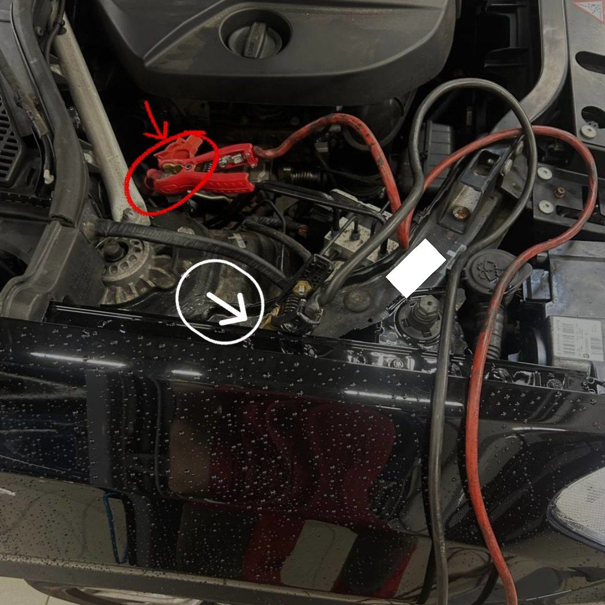
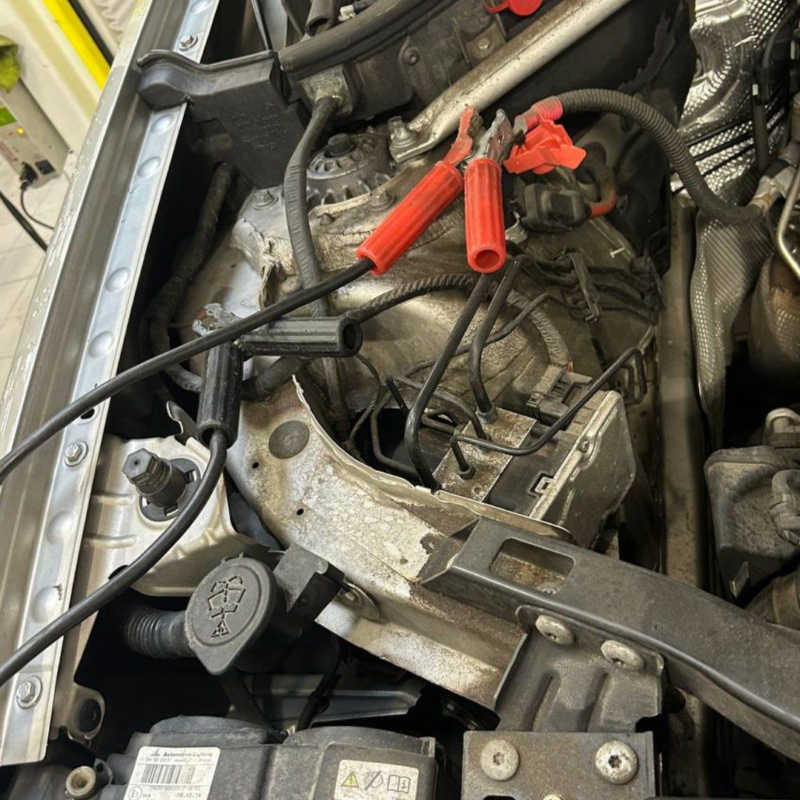

Home / Battery and electrical
BMW Jump-Start Points: Where to Connect the Cables
Quick answer
Many BMWs have a dedicated positive terminal under the hood, with a red cover marked +, and a separate grounding point on the body or engine. Connect red to the positive terminal of both cars, black to the donor battery negative, and the last black clamp to the grounding point, not to the battery. Check your manual first, because the exact points differ by model.

Why BMWs have special jump-start points
On many BMWs the battery is in the trunk or another place that is hard to reach, so the car has a terminal and a grounding point in the engine bay for jump-starting. You use these instead of the battery itself. Check your manual for their exact positions.
The points in the photos

Step by step
- Switch off the ignition and all electrics in both cars. Park them close but not touching.
- Open the cover of the positive terminal on the BMW.
- Connect one red clamp to the BMW positive terminal.
- Connect the other red clamp to the positive terminal of the donor battery.
- Connect one black clamp to the donor battery negative terminal.
- Connect the last black clamp to the BMW grounding point, away from fuel lines and moving parts.
- Start the donor car, wait a few minutes, then start the BMW.
- Remove the cables in the reverse order, without letting the clamps touch.

Safety note. Never let red and black clamps touch while connected. Don't jump-start a cracked, leaking or frozen battery. Hybrid and electric BMWs have extra rules and high-voltage parts, so use the manual and never touch orange high-voltage cables.
After the engine starts
Let the engine run, and drive for a while so the alternator can recharge the battery. If it fails to start again, or the battery is old, it may need replacing. A new BMW battery should be registered with the car. See BMW Battery Registration.
Common mistakes
- Clamping directly on the battery when the car has dedicated points
- Connecting the last black clamp near the battery or fuel lines
- Not checking the manual for hybrid or special models
- Leaving the cables connected while the engine is cranking for too long
FAQ
Where do I jump-start a BMW?
Many BMWs have a positive terminal under the hood with a red cover marked + and a separate grounding point. Check your manual.
Can I connect directly to the battery in the trunk?
If your car has dedicated points under the hood, use those. Check the manual for your model.
Where is the grounding point on a BMW?
It is a metal point on the body or engine, away from the battery and fuel lines. The manual shows its location.
Can I jump-start a hybrid BMW?
Some can be jumped at the 12-volt points, but the rules differ. Read the manual first.
Do I need to do anything after a jump-start?
Drive for a while to recharge the battery. If you replace the battery, it should be registered. See the registration guide.
This guide is general information based on personal experience, not professional advice. Check your own car's manual for exact specs and read the disclaimer before starting any job.